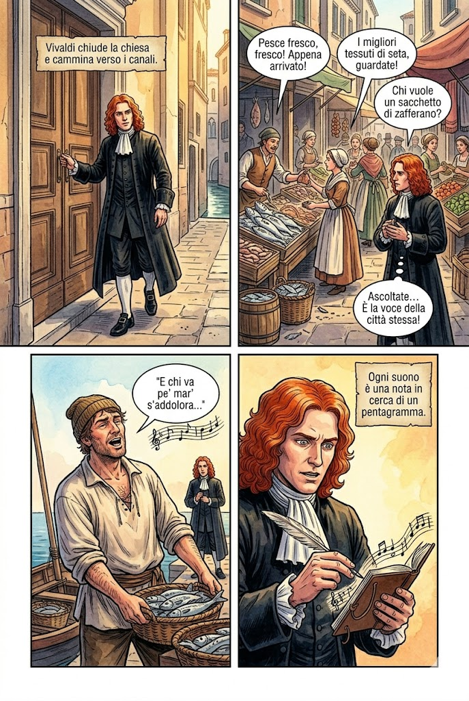

Italia
Firenze, Mantova, Venezia, Roma e Napoli guidano la nascita dell'opera, del concerto e della scuola violinistica.
Tra il 1600 e il 1750 la musica cerca meraviglia, movimento e contrasto. Nascono l'opera pubblica e il concerto, si afferma il sistema tonale e gli strumenti acquistano un ruolo sempre più autonomo.
Firenze, Mantova, Venezia, Roma e Napoli guidano la nascita dell'opera, del concerto e della scuola violinistica.
Alla corte di Luigi XIV musica, teatro e danza celebrano il potere. Lully definisce lo stile dell'opera francese.
La tradizione luterana, l'organo e il contrappunto confluiscono nell'opera monumentale di Johann Sebastian Bach.
Londra diventa la patria artistica di Händel, autore di opere, oratori e spettacolari musiche per le feste reali.
La musica barocca nasce in luoghi con funzioni diverse. Il compositore lavora per una corte o una chiesa, insegna in un'istituzione oppure si confronta con il pubblico pagante del teatro.
Prestigio e rappresentanza
Principi e sovrani finanziano cappelle, orchestre e spettacoli. La musica accompagna feste, cerimonie e danze.
Liturgia e formazione
Chiese, cappelle e ospedali musicali formano cantori e strumentisti. Cantate, Messe e Passioni sostengono preghiera e insegnamento.
Spettacolo e impresa
Con il teatro pubblico impresari, cantanti, scenografi e musicisti lavorano per conquistare gli spettatori.
Formazione e professione
Istituzioni assistenziali e scuole musicali educano cantori e strumentisti, alimentando orchestre, cappelle e teatri.
La musica non vuole essere immobile: mette in scena affetti, opposizioni e trasformazioni continue.
Poesia, scenografia, recitazione e musica si uniscono in uno spettacolo nuovo, nato in Italia e presto diffuso in Europa.

Firenze, Mantova, Venezia
Le prime opere sono spettacoli di corte. Con l'apertura dei teatri pubblici a Venezia, dal 1637, l'opera diventa un intrattenimento cittadino organizzato per un pubblico pagante.
Racconto ed emozione
Nel recitativo la voce segue il ritmo della parola e fa avanzare l'azione. Nell'aria il tempo scenico rallenta e il personaggio esprime un sentimento.
Eroi oppure vita quotidiana
L'opera seria mette in scena personaggi storici e mitologici. L'opera buffa usa situazioni quotidiane, dialoghi vivaci e personaggi riconoscibili.
Il Barocco organizza la musica in forme riconoscibili, basate sul contrasto, sulla danza, sulla narrazione o sull'imitazione.
Dialogo e contrasto
Nel concerto grosso un piccolo gruppo dialoga con l'orchestra; nel concerto solistico emerge un solo strumento.
Una raccolta di danze
Successione di danze contrastanti, spesso aperta da un preludio o da un'ouverture.
Musica da suonare
Composizione strumentale destinata a uno o più strumenti, con o senza basso continuo.
Un tema tra le voci
Un tema passa da una voce all'altra e genera un intreccio contrappuntistico rigoroso.
Voce, racconto e liturgia
Testo sacro, voci e strumenti accompagnano la liturgia o narrano la Passione di Cristo.
Teatro senza scena
Grande racconto musicale, spesso sacro, eseguito senza scene, costumi o recitazione teatrale.
Sette compositori mostrano la varietà del Barocco europeo, dal primo teatro musicale alla grande sintesi di metà Settecento.
Opera e madrigale
Collega polifonia rinascimentale e nuova monodia. Con L'Orfeo dà al teatro musicale una forza drammatica decisiva.
Musica alla corte francese
Unisce canto, danza e spettacolo nella corte di Luigi XIV e definisce lo stile dell'opera francese.
Sonata e concerto grosso
Dà equilibrio e chiarezza alla scrittura per archi. Le sue sonate e i suoi concerti diventano modelli studiati in tutta Europa.
Concerto solistico
Violinista e compositore veneziano. Nei concerti delle Quattro stagioni trasforma immagini della natura in gesti musicali.
Contrappunto e musica sacra
Porta fuga, cantata, Passione e musica strumentale a una sintesi di straordinaria profondità.
Opera, oratorio e musica celebrativa
Musicista europeo attivo a Londra: dal Messiah alle suite per feste sull'acqua e fuochi d'artificio.
Opera buffa e musica sacra
La serva padrona diventa un modello del teatro comico; lo Stabat Mater ne mostra il lato intensamente lirico.
Le botteghe perfezionano gli strumenti e l'orchestra acquista un'identità più stabile, guidata dalla famiglia degli archi.
Uno schema visivo dei concetti chiave del Barocco musicale.
Guarda questo video per approfondire la musica del Barocco, poi usa le schede per orientare l'ascolto.
Approfondimento sulla storia e sulle caratteristiche della musica barocca
«Tu se' morta»
dalla Cantata BWV 147
«Lascia ch'io pianga»